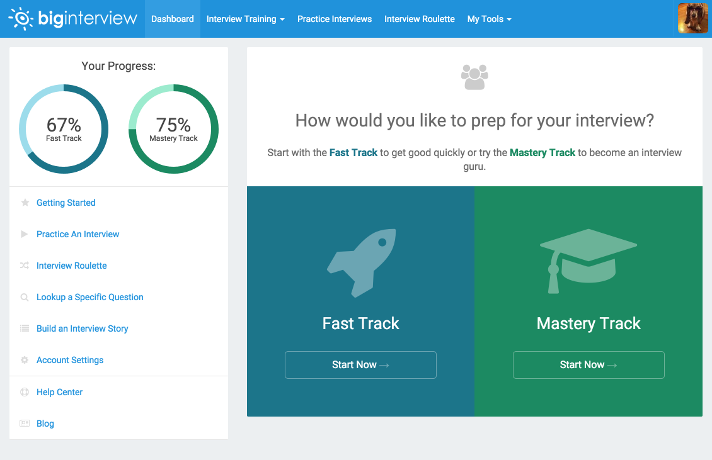

Approved partners and organizations can use the features, APIs and integrations described in this document to provide a deeper level of integration for their users between their applications and the Big Interview system.
This section describes generating API Keys for authenticating requests, making those requests, and the API endpoints available to your organization. Some of these endpoints go hand-in-hand with our integration guides below. For instance, our Single Sign On integration requires generating a temporary token through our API before redirecting your user to the Big Interview application.
Everything you need to communicate with the Big Interview Partner API is described in the sections below.
To access the API described below, you need to generate API Keys through
your organization’s admin area. It can be reached by replacing {org}
in the following url with the subdomain for your organization:
https://{org}.biginterview.com/login/admin
Once there, a link entitled API Settings will be visible in the dropdown
list under your name in the top navigation menu. Visiting that section will
allow you to both create and delete API Keys for your organization.
Our API Keys will take the format of a 32 character, randomized string similar
to the following example key:
935d85189822bf96c28c4fa79d3d8f31
Once you have at least one valid API key for your organization you will be able to access the endpoints specific to your organization in the way described in the section below.
Once your organization has at least one API Key, you can start making requests to the Big Interview API. These requests should, at a minimum, take the following HTTP format:
GET /api/{endpoint} HTTP/1.1
Host: {org}.biginterview.com
Accept: application/json
Authorization: {api-key}
Take, for example, the following scenario for XYZ Corporation:
xyz.biginterview.com.935d85189822bf96c28c4fa79d3d8f31.partner_id of
abc123def.A request based on that information will, at a minimum, have the following HTTP format:
GET /api/users/abc123def/progress HTTP/1.1
Host: xyz.biginterview.com
Accept: application/json
Authorization: 935d85189822bf96c28c4fa79d3d8f31
Most REST-based APIs identify singular resources by a unique id attribute. For
example, fetching a singule User on a given API might might have a resource URI
like /users/:id. Most of the time, the application backing the API will
generate these unique ids for you, however, the Big Interview Partner API works
a bit differently in that these unique ids are actually supplied by the partner
during initial account creation.
When making API calls on behalf of a user, you will be responsible for supplying
a partner_id attribute that will uniquely identify the user your system.
The only case in which you will not be providing the API with the partner_id
is in the case of Anonymous Users, which is explained below.
The partner_id provided should abide by the following rules.
0-9.a-z/A-Z.- (dash) or a _ (underscore).1 and 64.If this is a problem with your system, please let us know as soon as possible.
Simply put, anonymous users are just regular users. However, there are two significant differences between the them:
partner_id is actually generated by the API. It is
unique to our system and, generally, will take the format of a UUID.
This attribute will be returned in the create response.Those differences aside, you can use the partner_id returned from the
create response anywhere else in the API that a partner_id is referenced or
required. Again, you can find out how to create anonymous users by reading our
API method documentation.
Big Interview uses basic HTTP response codes to indicate success or failure of a
request. For the most part, codes in the 2xx range indicate a success, codes
in the 4xx range indicate a failure due to the information provided by the
client, and codes in the 5xx range indicate a server error on our part.
{
"error": {
"type": "validation_error",
"message": {
"name": "is required"
}
}
}
Whenever possible, we will return an error object in the JSON response
containing the following attributes:
| Attribute | Description |
|---|---|
type |
The type of error. See our error types for more info. |
message |
A human-readable message describing the error. |
A user is a unique record who shares a single account between your partner application and Big Interview.
Endpoints that resuly in the creation of a user account also handle the initial
generation Single Sign On tokens. All responses to these endpoints will
include a token object as part of the response. These tokens follow the same
rules outlined in the Create/Refresh a User endpoint.
/api/users/anonymous
Anonymous users are simply temporary user’s whose partner_id is generated by
the API. Read the Anonymous Users section for more information.
POST /api/users/anonymous HTTP/1.1
Host: {org}.biginterview.com
Accept: application/json
Authorization: {api-key}
| Code | Description |
|---|---|
| 201 | Anonymous user account was created. |
{
"user": {
"partner_id": "anon_abc123",
"created_at": "2015-01-01T00:00:00.000Z",
"anonymous": true,
"token": {
"token": "19633c68a809dda515d78bbee308012634b73f4142b4ae58d8790c7094c66417",
"expires_at": "2016-05-28T17:16:18.817Z"
}
}
}
/api/users/{partner_id}
Creating a User or refreshing their token in the Big Interview system both can be done with the same endpoint. This simplifies the process of ensuring User accounts exist on our system and reduces the functional and logical overhead on your end. Essentially, this endpoint is idempotent. User accounts are never duplicated, and the parameters required during create are simply ignore when submitted for an existing user.
As noted in the Identifying Users section, it is your responsibility
to ensure that the partner_id is unique in your system for the user being
created. That attribute is supplied here as part of the URI structure. For
example, a user with a partner id of 123 will have the URI endpoint
/api/users/123.
There is currently no way to update an existing user’s partner_id in our
system.
This endpoint also returns a token object in it’s response. Tokens allow
user’s from your application to login to Big Interview without the need for
entering password through our Single Sign On integration. That process
utilizes tokens generated by this endpoint.
All tokens expire 48-hours after they are created. They cannot be used as part of our SSO integration after they expire, however, a user’s token is automatically refreshed when making a call to this endpoint.
| Param | Type | Required | Desc |
|---|---|---|---|
| first_name | String |
Creation Only | The first name of the user. |
| last_name | String |
Creation Only | The last name of the user. |
String |
Creation Only | The email address of the user. |
POST /api/users/{partner_id} HTTP/1.1
Host: {org}.biginterview.com
Accept: application/json
Authorization: {api-key}
| Code | Description |
|---|---|
| 200 | User account was updated successfully. |
| 201 | User account was created successfully. |
| 422 | Provided attributes were invalid. (See message for more information) |
{
"user": {
"partner_id": "{partner_id}",
"created_at": "2015-01-01T00:00:00.000Z",
"anonymous": false,
"token": {
"token": "19633c68a809dda515d78bbee308012634b73f4142b4ae58d8790c7094c66417",
"expires_at": "2016-05-28T17:16:18.817Z"
}
}
}
/api/users/{partner_id}/tracks
Big Interview currently offers two guided learning tracks to get users started utilizing all the content the service has to offer. In the app, we display this information as a progress bar linked to a panel presenting a step-by-step guide to completing the track:

Through this endpoint, you can access the exact same information displayed on these panels and display it back to users inside your application.
GET /api/users/{partner_id}/tracks HTTP/1.1
Host: {org}.biginterview.com
Accept: application/json
Authorization: {api-key}
| Code | Description |
|---|---|
| 200 | User track progress information was loaded. |
| 404 | User whose progress is being requested does not exist. |
{
"tracks": [
{
"title": "Fast Track",
"progress": 1.00,
"tracks": [
{
"step": 1,
"title": "Tell me about yourself",
"link": "/members/curriculum?chapter=5",
"completed": true
}
]
},
{
"title": "Mastery Track",
"progress": 0.50,
"tracks": [
{
"step": 1,
"title": "Job Interview Fundamentals",
"link": "/members/curriculum?chapter=1",
"completed": true
},
{
"step": 2,
"title": "Why do you want to work here?",
"link": "/members/curriculum?chapter=6",
"completed": false
}
]
}
]
}
Our Single Sign On integration allows users of your application to login to Big Interview without having to enter a password. This is accomplished by generating a token using our Partner API and redirecting the user to a specific URL with that token.
The Single Sign On Integration is a simple, 2-step process, both being outlined below:
Generating the token needed for Single Sign On is outlined in the our
API docs above, but the following might be an example request and
response for a user with a partner_id of abc123:
POST /api/users/abc123 HTTP/1.1
Host: xyz.biginterview.com
Accept: application/json
Authorization: 935d85189822bf96c28c4fa79d3d8f31
{
"user": {
"partner_id": "abc123",
"created_at": "2015-01-01T00:00:00.000Z",
"anonymous": false,
"token": {
"token": "19633c68",
"expires_at": "2016-05-28T17:16:18.817Z"
}
}
}
The user.token object contains the token attribute which should be used in
Step 2 of the Single Sign On process. In the above example, this
would be 19633c68.
With the token from Step 1 in hand, your client should then redirect the user to your organizations SSO URL. That URL will take the following format:
https://{org}.biginterview.com/sso/login?token={token}
Assuming XYZ Corporation has a Big Interview application at the
xyz subdomain, and they would like to login the user using the token returned
from Step 1, the SSO Redirect URL will take the following format:
https://xyz.biginterview.com/sso/login?token=19633c68
After performing this redirect, the Single Sign On process is complete and your user will be logged in to the Big Interview web application.
By default, users signing in to Big Interview through the SSO integration will be redirected to the member dashboard, which is at the following URL:
https://{org}.biginterview.com/members/dashboard
To have this integration redirect the user to different section of the Big
Interview application, you can supply a redirect_to parameter to the SSO login
resource URL and we will point the user to there instead.
Say you wants to direct the user to a yet to be completed item in one of Big Interview’s track guides and we have the following information:
935d85189822bf9c./members/curriculum?chapter=6.We can do that with the following URL parameters:
token=abc123&redirect_to=%2Fmembers%2Fcurriculum%3Fchapter%3D6
/members/curriculum?chapter=6.%2Fmembers%2Fcurriculum%3Fchapter%3D6.Note that the parameters supplied to the SSO integration are encoded. That part of the SSO process is something that your client library is responsible for.